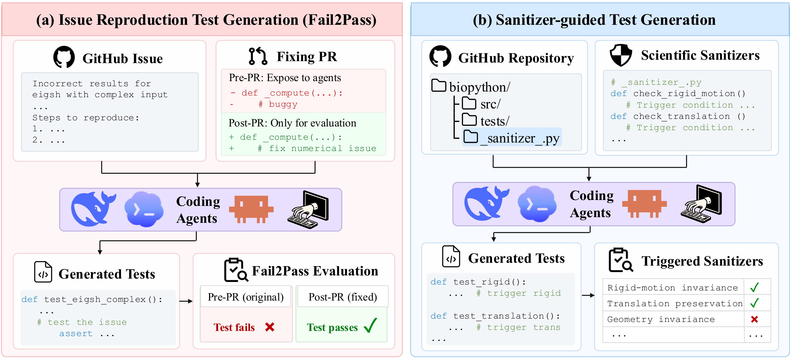

Abstract
Testing Scientific Software with Agents
Scientific software serves as a critical component of scientific instruments, but its errors can compromise both the integrity of the experiment and downstream scientific conclusions. Building reliable scientific software relies on rigorous testing, which provides executable safeguards by verifying reported bugs and their fixes, and uncovering new errors. We introduce SciTestBench, a benchmark for evaluating AI coding agents in test generation for production scientific software.
The benchmark consists of two complementary tasks: reproducing reported bugs with regression tests that fail before a fix and pass afterward, and proactively generating tests that uncover new bugs captured by sanitizers based on scientific principles. We evaluate 8 coding agents on 149 issue-reproduction tasks and 400 sanitizers across 6 scientific domains. Our evaluation shows that agents frequently make incorrect scientific assumptions, fail to exercise critical software behaviors, or construct invalid test oracles. As part of our effort to benchmark frontier agents, tests generated during our study led to 56 upstream issue reports, of which 31 were confirmed and 9 were fixed by maintainers.
Task Design
Two Complementary Maintenance Tasks
Regression testing reproduces a bug that has already been fixed. Bug finding searches for new violations of scientific constraints.
Issue Reproduction Test Generation
Given a GitHub issue and the buggy repository, submit a test-only patch that fails on the buggy revision and passes once the hidden reference fix is applied.
- Input
- Issue text + buggy revision
- Metric
- Fail→Pass rate, manually reviewed
- Leakage
- Closing PRs contain no test patch
Sanitizer-Guided Test Generation
No bug report is given. The repository is instrumented with public scientific sanitizers, and the agent writes valid tests that trigger as many invariant families as possible.
- Input
- Instrumented repo + sanitizer bank
- Metric
- Distinct invariant families triggered
- Budget
- 20 minutes per repository run

How issues and sanitizers were curated and reviewed: Method →
Data Composition
What the Benchmark Contains
Issue tasks are drawn from 19 mature scientific repositories; the sanitizer bank covers 11 repositories.
Issue tasks by scientific domain (%)
Share of 149 issue-reproduction tasks across 19 repositories. † fewer than eight instances.
Sanitizer bank by repository
400 sanitizers grouped into 387 invariant families across 11 repositories.
Results
Leaderboard
Eight model–harness configurations, each run at the model's default reasoning effort, with Internet access and repository history disabled.
| Rank | Model & harness | Issue F→P (%) | Sanitizer (families) |
|---|
Issue: Fail→Pass rate on 149 tasks. Sanitizer: distinct invariant families triggered, out of 387 families (400 sanitizers). The bar scale is relative to the leading configuration.
Real-World Impact
Bugs Found in Production Scientific Software
Tests generated during our study exposed real defects, which were reported upstream to maintainers.
Reports by repository and representative findings: Impact →
Details
Explore the Details
Each page expands one part of the paper.
Benchmark construction →
Issue curation criteria, the law-first sanitizer design and the curation workflow.
AnalysisWhere performance breaks down →
Harness effects, success by science and SWE difficulty, per-repository sanitizer triggers, cost and test size.
Failure casesHow agents get scientific tests wrong →
A failure audit and ten worked cases with the test code the agents actually generated.
ImpactFrom benchmark to upstream fixes →
56 upstream reports, 31 confirmed and 9 fixed by maintainers, with representative findings.
Citation
BibTeX
@misc{scitestbench2026,
title = {SciTestBench: Can AI Agents Find Errors in
Scientific Software?},
author = {Anonymous},
year = {2026},
note = {Under review}
}